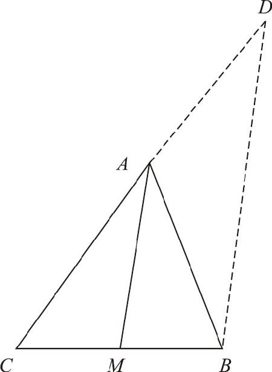

∠CAB
（等量代换）．
∠CAB
（等量代换）．对于两个三角形而言，除了被平行线所截之外，还有哪些条件可以判定两个三角形的相似关系呢？
三角形的全等定理有四个，除了两个条件不能判定全等之外，剩下的条件只要凑齐三个就可以了．在被我们排除的两个条件之中，首先就是没有对应边不行，如果只有三个角对应相等，就无法判定两个三角形全等，因为形状一样、大小不一样的图形属于相似图形．三角形相似的第一个判定定理，就是三个角对应相等．接下来，我们再分析一下判断三角形全等的几个条件．
首先是边边边的条件，当两个三角形三边对应相等时，两者之间必然是全等关系．现在我们学了相似图形，只需要把三边相等的条件修改为三条边对应成比例，就可以判断这两个三角形相似了．
然后是边角边的条件，在判定三角形全等时，需要判断两边夹角对应相等．要判断相似是不是三个条件都换成对应成比例就可以了？不成，角度不能对应成比例，角的大小变了形状就变了，所以角度只能对应相等．于是该条件变为：两条边对应成比例，并且夹角对应相等，就可以判定两个三角形是相似的．千万不能说成对应角成比例！
接着是角边角的条件，判定全等的条件是两角夹边对应相等．现在要判断相似应该改为：两个角对应相等，并且两个角之间的夹边对应成比例吗？不需要对应成比例．
最后是角角边的条件，角角边定理中只有一条边，根本就没有对应成比例的说法．所以，压根儿就没这么一个定理．这就是说，只要知道三角形有两个角对应相等，就可以直接判定两个三角形相似．
总结一下，判断两个三角形相似的条件有三个：第一，三条边对应成比例；第二，对应边成比例，且夹角相等；第三，两个角对应相等．没错，我们用不着判断三个角相等．判定定理研究明白了，我们就用它解决个具体问题吧．
如图9－4所示，在△ABC 中，AM 平分∠A ，求证：MC ∶MB ＝AC ∶AB ．

图9－4
已知条件非常简单，但结论却让我们产生了怀疑：为什么角平分线截断的两条线段和它原来三角形的夹边有比例关系呢？下面，我们就来深入分析一下：要证明边的比例关系有两种思路，一种方式是利用三角形相似原理，另一种方式就是利用平行线把线段截断，然而从图中我们看到MC 和MB 位于同一条直线中，但AC 和AB 不属于同一条直线，因此要让这两组线段对应成比例，必须进行一下图形的变换，对应的思路也就有两种：一种方式是把AB 和AC 转移到同一条直线上，然后和MC 、MB 去对比；另一种方式则是把MC 、MB 折断，把它们移动到一个和△ABC 相似的三角形中．
下面，我们采用第一个思路进行证明：把AC 、AB 转移到同一条直线上，很容易想到的办法是把AC 或者AB 延长，截取出与另一条边相等的一条线段来．假设我们把CA 延长至D ，使DA ＝AB ，比例关系就被移到了CD 这条直线上，而我们需要证明的是CA ∶AD ＝CM ∶MB ．要想让这组比例关系成立，则必须要求DB 和AM 平行，因此我们可以连结DB ．而要证明它们两者平行，则需要内错角或同位角的帮助．接下来我们就看一下△ADB 的角度关系，由于AD ＝AB ，这个三角形的两个底角∠D 和∠ABD 是相等的，同时，要判断平行，我们还需要找它们的同位角或内错角．根据图示不难发现：∠D 的同位角∠CAM 和∠ABD 的内错角∠MAB 都位于∠CAB 的内部，又因为AM 是角平分线，所以这两个角又是相等的，所以我们终于知道这四个角全部都是彼此相等的．以下是完整的证明过程：
∵AD ＝AB （作图所得），
∴∠D ＝∠ABD （等边对等角）．
∵∠D ＋∠ABD ＝∠CAB （外角定理），
∴2∠D
＝∠CAB
，即∠D
＝
∠CAB
（等量代换）．
又∵∠CAM
＝
∠CAB
（角平分线的定义），
∴∠D ＝CAM ，
∴DB ∥AM （同位角相等，两直线平行），
∴MC ∶MB ＝AC ∶AD ＝AC ∶AB （平行线截线段成比例）．
以上我们介绍了相似三角形的判定定理，需要注意的是：虽然经过平行线截断后可以产生相似三角形，但相似三角形却并不一定是被平行线截出来的．在实际问题中经常有两个三角形翻转重叠地交织在一起的情况，由于三角形相似不像三角形全等那么直观，必须严格地按照定理往下推演，不能只依赖于直觉．